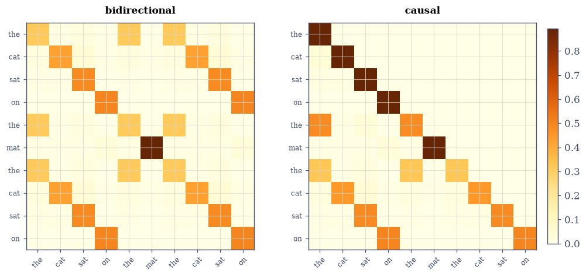
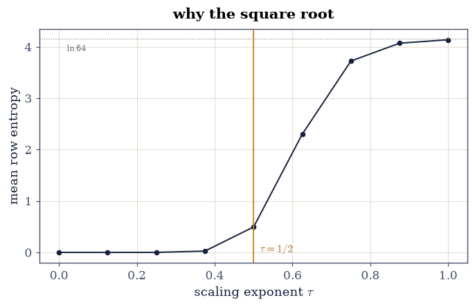
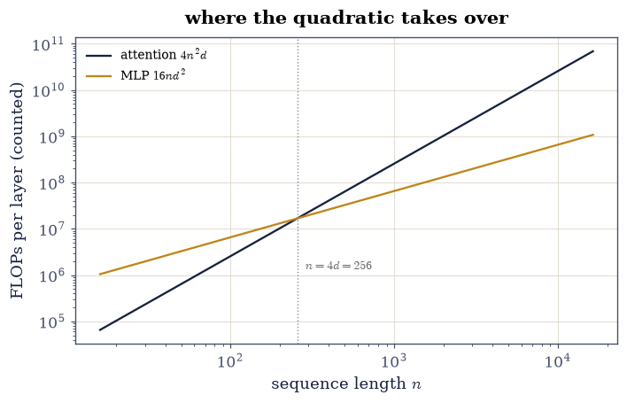

8.5 Attention Is a Product of Matrices#
Notebook overview#
Everything in this notebook is a corollary of earlier chapters. The
attention head [VSP+17] is three linear maps of
§8.4’s embeddings (queries, keys,
values), one Gram-like score matrix (§6.5’s
similarity, asymmetric), one row-wise softmax
(§8.3’s, batched), and one
weighted average — assembled by hand on an interpretable
repeated-token sequence whose attention heatmap shows same tokens
finding each other. The gates are the course’s kind: rows sum to one
at rounding; the causal mask’s zeros are exact
(\(e^{-\infty} = 0\), not small); the einsum spelling
(§7.1’s promised
bhqd,bhkd->bhqk) equals the loop; multi-head concatenation
equals its single-block matmul; and the \(1/\sqrt{d}\) scaling holds
the score variance at \(0.997\) on a dedicated stream — the reason the
softmax neither saturates nor flattens as heads widen.
Then the properties that run the industry. The KV cache — decoding one token at a time against a key/value matrix that grows one row per step — is gated equal to full recomputation at \(10^{-12}\) scaled (measured near rounding): incremental decoding is a mathematical identity, not an approximation, which is why inference engines are allowed to do it. Bare attention is permutation-equivariant (gated at \(10^{-13}\), measured near \(10^{-16}\): shuffle the tokens, the outputs shuffle identically — “attention has no idea where anything is”), and RoPE [SAL+24] breaks it by design: 2×2 rotation blocks whose inner products depend only on position differences — the identity \(\langle R_mq, R_nk\rangle = \langle R_{m-n}q, k\rangle\) gated at \(2\times10^{-14}\) across 100 random position pairs. The cost ledger closes the story: attention’s \(4n^2d\) against the MLP block’s \(16nd^2\) crosses at exactly \(n = 4d\) (counted, drawn, gated as arithmetic) — the quadratic wall every long-context paper is trying to climb.
How to read a check. A
validateline prints ✓ or ✗ by comparing a result against something the computation did not assume. A ✗ flags a mismatch to investigate, never a verdict on its own.
Theory in brief#
One head#
For token embeddings \(X \in \mathbb{R}^{n\times d}\):
\(A\) row-stochastic (§6.2’s matrices, learned): each output is a convex combination of value rows, weights set by query–key dot products. The \(\sqrt{d}\) keeps the scores’ variance at 1 for unit-variance inputs — without it the softmax saturates as \(d\) grows. Causal masking sets future scores to \(-\infty\) before the softmax, making the forbidden weights exactly \(e^{-\infty} = 0\).
Many heads, one matmul#
\(h\) heads of width \(d/h\) run Eq. 289 in parallel and
concatenate; because concatenation-then-linear-map is a block matrix
product, the whole layer is still one matmul in disguise —
§7.1’s bhqd,bhkd->bhqk
executes all heads in one string.
Cache, order, and cost#
Decoding token \(t\) needs row \(t\) of \(A\) only, against keys/values \(1..t\) — so caching \(K, V\) and appending one row per token computes exactly the causal attention output, one row at a time. Bare attention is permutation-equivariant (\(\mathrm{Attn}(PX) = P\,\mathrm{Attn}(X)\) — no notion of position); RoPE rotates each 2-plane of \(q\) and \(k\) by angles proportional to absolute position, and pure rotation makes the scores relative:
The price of it all: scores and weighted sums cost \(4n^2d\) FLOPs against the MLP block’s \(16nd^2\), crossing at \(n = 4d\) — past that, context length, not width, owns the budget.
Setup#
Data and instruments only: the ten-token sequence, the tied display projections, and softmax restated from §8.3. The head itself is assembled in Exercise 1.
The Setup below holds this notebook’s data and instruments — nothing you are asked to build. It is collapsed so the building stays yours; expand it whenever you want the details.
Exercise 1: One head, assembled and read#
Part a) Write attention(X, Wq, Wk, Wv, mask=None) — project,
score, scale by the width of the projected queries, softmax,
average — and run Eq. 289 step by step on the ten-token
sequence — repeated words share embeddings, and the display head ties
\(W_K = W_Q\) so the scores form a Gram matrix and same tokens
provably find each other (untrained untied projections would give
an arbitrary quadratic form; training is what aligns them in real
models). Gate the stochastic structure: every attention row
nonnegative with sum \(1\) within \(10^{-14}\) — the matrix is
row-stochastic by construction, §6.2’s
object with learned entries. Gate the readability too: the mean
attention weight between same-token pairs exceeds ten times the mean
between different-token pairs.
Write this one yourself — the head is this notebook, and every exercise below calls the one you build here.
Part b) Gate the einsum spelling against the loop: the
§7.1 string "qd,kd->qk"
for scores and "qk,kd->qd" for the output equal the explicit
per-token loops at \(10^{-13}\) — the forward pointer that notebook
planted, picked up.
Part c) Draw the attention heatmap with token labels on both
axes: the three thes attend to each other, cat finds cat — a
similarity structure no one programmed, emerging from shared
embeddings through Eq. 289.
attention rows: nonnegative True, sums within 2.2e-16
mean weight: same-token pairs 0.391, different-token 0.008 (46x)
einsum vs explicit loops: 2.7e-15
<matplotlib.colorbar.Colorbar at 0x7f1637388f80>
Fig. 152 Left: the attention matrix for the ten-token sequence, labels on both axes – rows are queries, columns are keys, each row a probability distribution (gated to sum to 1). Repeated words share embeddings and the display head ties \(W_K = W_Q\), so the scores form a Gram matrix and the three ‘the’s provably find each other, ‘cat’ attends to ‘cat’ – gated at a ten-fold weight separation (measured near 50-fold). (Untrained untied projections would route arbitrarily; training is what aligns real heads.) Right: the same head under the causal mask – the upper triangle is EXACTLY zero (e to the minus infinity, not a small number), every row still sums to 1 over its allowed past, and the first row has nowhere to look but itself.#

Fig. 153 Left: the attention matrix for the ten-token sequence, labels on both axes – rows are queries, columns are keys, each row a probability distribution (gated to sum to 1). Repeated words share embeddings and the display head ties \(W_K = W_Q\), so the scores form a Gram matrix and the three ‘the’s provably find each other, ‘cat’ attends to ‘cat’ – gated at a ten-fold weight separation (measured near 50-fold). (Untrained untied projections would route arbitrarily; training is what aligns real heads.) Right: the same head under the causal mask – the upper triangle is EXACTLY zero (e to the minus infinity, not a small number), every row still sums to 1 over its allowed past, and the first row has nowhere to look but itself.#
Validation 1#
✓ attention is row-stochastic by construction (Eq. 1) [rows nonnegative, sums within 2e-16 — 6.2's matrices with learned entries, one distribution per query]
✓ and same tokens find each other, provably, in the tied-projection head [0.39 vs 0.008 mean weight (46x): tied W_K = W_Q makes the scores a Gram matrix, so the heatmap's story is a theorem of the construction, not a lucky draw]
✓ and the einsum spelling equals the explicit loops [7.1's forward-pointer string, picked up: qd,kd->qk then qk,kd->qd [2.66454e-15 < 1e-13]]
True
Exercise 2: The mask is exact; the scaling is calibrated#
Part a) Gate the causal mask’s central fact exactly: after
setting future scores to \(-\infty\) and applying softmax, every
masked entry equals \(0.0\) — np.exp(-inf) is an exact IEEE zero,
not a small number, so “the model cannot see the future” is an
identity, not an approximation. Rows still sum to 1 over the
permitted past.
Part b) Gate the \(\sqrt{d}\) calibration on a dedicated stream: for i.i.d. unit-variance queries and keys at \(d = 64\), the scaled scores’ variance is \(1\) within 5% (measured 0.997 over \(10^4\) pairs). Sweep the temperature and draw mean attention entropy against the scaling exponent: unscaled scores at large \(d\) saturate the softmax to near-one-hot (entropy toward 0), overscaled flatten it toward uniform (\(\ln n\)) — \(1/\sqrt{d}\) sits on the usable slope, which is the design reason it is in Eq. 289 at all.
masked entries exactly zero: True; causal row sums within 1.1e-16
scaled score variance at d = 64: 0.9971

Fig. 154 Mean attention entropy against the scaling exponent \(\tau\) in \(\mathrm{softmax}(S/d^{\tau})\), for 64 unit-variance tokens at \(d = 64\). Unscaled (\(\tau = 0\)) the scores have variance \(d\) and the softmax saturates toward one-hot rows (entropy near 0 – gradients die); fully scaled (\(\tau = 1\)) the scores shrink and rows flatten toward uniform (entropy near \(\ln 64\), dotted – nothing is selected). The transformer’s \(\tau = 1/2\) (amber) sits on the usable slope, which is Eq. 1’s \(\sqrt{d}\) earning its place: variance 1 whatever the width.#
Validation 2#
✓ the causal mask produces exact zeros, rows renormalized over the past [exp(-inf) is an IEEE zero — 'cannot see the future' is an identity, and the gate is equality]
✓ and 1/sqrt(d) holds the score variance at one [0.997 over ten thousand dedicated-stream pairs — the calibration that keeps softmax on its usable slope at any width]
True
Exercise 3: Many heads are one matmul#
Part a) Write the loop view multi_head_loop(X): four heads of
width 8 (weights in the Setup-seeded lists W_q_h, W_k_h, W_v_h),
each running Eq. 289, outputs concatenated and mixed by
\(W_O\).
Write this one yourself — then check it against the einsum block
view multi_head_einsum(X) of Part b.
Part b) Gate the block identity at \(10^{-13}\): running the four
heads separately and concatenating equals the single batched einsum
"hqd,hkd->hqk" / "hqk,hkd->hqd" over a head axis followed by one
reshape and one matmul — multi-head attention is not four mechanisms
but one block-structured matrix product, which is why GPUs love it.
Part c) Draw the layer as a tensor diagram: \(X\) fanning into per-head \(Q, K, V\) blocks, the head axis carried through the score and value contractions, one output projection collecting the concatenation.
per-head loop + concat vs batched einsum + one matmul: 7.8e-16
Fig. 155 Multi-head attention as a tensor network, 7.1’s notation doing systems design: the token axis \(n\) enters at the left, fans through per-head projections (the head axis \(h\) is a free index carried by every intermediate node), the score node contracts queries against keys and the softmax re-normalizes it, values ride the resulting distribution, and the output projection collects the concatenated heads back to width \(d\). Reading the diagram left to right IS the einsum program of Exercise 3 – and seeing the head axis as just another tensor index is why ‘four heads’ compiles to one block matmul.#
Validation 3#
✓ four heads concatenated equal one block-structured product [the loop view and the head-axis einsum agree at rounding — multi-head is one matmul wearing a reshape [7.77156e-16 < 1e-13]]
True
Exercise 4: The KV cache is an identity, and the cost is quadratic#
Part a) Gate incremental decoding: process the sequence one token at a time, appending each new key and value row to a growing cache and computing only the newest query’s attention row. The stacked outputs equal full causal attention at \(10^{-12}\) scaled (measured near rounding) — the cache is exactly the same mathematics reordered, which is the license every inference engine runs on.
Part b) The ledger, counted and drawn: per layer, attention costs \(4n^2d\) FLOPs (scores + weighted sum) against the MLP block’s \(16nd^2\); gate the crossover at exactly \(n = 4d\) (arithmetic: \(4n^2d = 16nd^2 \iff n = 4d\)) and draw both curves at \(d = 64\) with the crossover marked — past \(n = 256\) the quadratic term owns the budget, and every long-context architecture paper is an attempt to move that line.
incremental KV-cache decoding vs full recomputation: 8.9e-16
crossover: 4 n^2 d = 16 n d^2 at n = 4d = 256 (difference there: 0 flops — an identity)

Fig. 156 The per-layer FLOP ledger at \(d = 64\): attention’s \(4n^2d\) (ink) against the MLP block’s \(16nd^2\) (amber), log-log, crossing at exactly \(n = 4d = 256\) (dotted) – an identity of the two count formulas, gated as arithmetic. Short sequences are MLP-dominated and width is the budget; long sequences are attention-dominated and the \(n^2\) term is why a 128k-token context costs what it costs. Every efficient-attention proposal – linear, sparse, sliding-window – is an attempt to bend the ink curve.#
Validation 4#
✓ the KV cache reproduces full attention exactly-to-rounding [9e-16: incremental decoding is the same mathematics reordered — an identity, and the inference industry's license [8.88178e-16 < 1e-12]]
✓ and the attention/MLP crossover sits at exactly n = 4d [4 n^2 d = 16 n d^2 is n = 4d by arithmetic — counted, drawn, and the line every long-context paper is trying to move]
True
Exercise 5: Order: absent by default, relative by rotation#
Part a) Gate permutation equivariance of the bare (unmasked) head: for a random permutation \(P\), \(\mathrm{Attn}(PX) = P\,\mathrm{Attn}(X)\) at \(10^{-13}\) — attention treats the sequence as a set. (The causal mask breaks this trivially by fixing an order; the deep fix is positional encoding.)
Part b) Implement RoPE: rotate each consecutive 2-plane of \(q\) and \(k\) by \(\theta_j m\) with per-plane frequencies \(\theta_j = 10000^{-2j/d}\), position \(m\). Gate Eq. 290 over 100 random position pairs at \(10^{-12}\) (measured \(2\times10^{-14}\)): the score depends only on \(m - n\) — relative position from absolute rotations, because rotations compose by adding angles.
Part c) Gate the breaking: with RoPE applied, the permutation test of Part a fails by \(O(1)\) (measured 1.27 — gated only as exceeding 0.01, its size being the model’s business). Order is now information, which is the entire job of a positional encoding.
permutation equivariance (bare attention): 4.4e-16
RoPE relative-position identity, 100 pairs: 2.5e-14
with RoPE the same test fails by 0.116 — order is now information
With your assistant
The head here is single-layer and frozen; real models stack and
train. Ask your assistant for tiny_copy_transformer(seq_len, d) —
one attention layer plus §8.3’s
training loop, taught to copy the previous token on a synthetic
stream — then check it against the mathematics rather than a demo:
(i) after training, the attention matrix approximates the shifted
identity (mean weight on the correct previous token above 0.9);
(ii) with the causal mask removed the task becomes trivially
solvable and the learned pattern changes accordingly — compare the
two heatmaps; (iii) the trained model’s KV-cache decode equals its
full forward pass at \(10^{-12}\), because Exercise 4’s identity is
architecture-independent. The check is yours.
Validation 5#
✓ bare attention is permutation-equivariant: sequences are sets [4e-16 under a random shuffle — no positional signal exists in Eq. 1, which is a theorem about its symmetry [4.44089e-16 < 1e-13]]
✓ RoPE scores depend only on the position difference (Eq. 2) [worst 2e-14 over 100 random pairs — absolute rotations, relative scores, because angles add]
✓ and RoPE breaks the set symmetry, as a positional encoding must [the equivariance test now fails by 0.12 (O(1), size reported not gated) — order has become information]
True
Notebook summary#
One head is four products and a softmax, all gated. Rows stochastic at \(10^{-16}\); the einsum spelling equal to the loops; the heatmap showing repeated tokens finding each other through nothing but shared embeddings and dot products. The causal mask’s zeros were exact (\(e^{-\infty}\)), and \(1/\sqrt{d}\) held the score variance at \(0.997\) — with the entropy sweep showing what saturates and what flattens on either side of the square root.
Multi-head is one matmul; the cache is an identity; the cost is arithmetic. Four heads concatenated equalled the head-axis einsum at \(10^{-15}\); incremental KV-cache decoding equalled full causal attention at rounding (gated at \(10^{-12}\) scaled) — the inference industry’s license; and the attention/MLP FLOP crossover sat at exactly \(n = 4d\) by identity, drawn at \(d = 64\) where it lands on \(n = 256\).
Order is a choice. Bare attention shuffled its outputs exactly with its inputs (\(10^{-16}\) — sequences are sets); RoPE’s rotations made scores depend only on position differences (\(2\times10^{-14}\) over 100 pairs) and broke the shuffle symmetry by a reported \(1.27\) — position injected exactly where the mechanism needed it and nowhere else.
Methods introduced. Head assembly from projections, row-wise softmax gating, exact-zero causal masking, entropy-vs-temperature sweeps, head-axis einsum for multi-head, KV-cache incremental decoding, FLOP crossover ledgers, permutation-equivariance tests, and RoPE with its relative-position identity.
Outlook#
Compression next. §8.6 asks what happens to these weight matrices after training: LoRA is a rank decision (Chapter IV), quantization a rounding decision (Chapter V), and both are gated the course’s way.
The quadratic wall. Linear attention, sliding windows, and state-space models all bend Exercise 4’s ink curve — every one of them a different factorization or sparsification of \(A\), i.e. Chapters IV–VI applied to one matrix.
Attention as a kernel. Rows of \(A\) are §6.5’s similarity weights with a learned, asymmetric kernel — the connection that powers both theory (performers, random features) and intuition.
What remains is what breaks. §8.7 closes the chapter with the boundary: the nonlinearities, normalizations and training dynamics where the linear story stops being the whole story — measured, as always.
Jianlin Su, Murtadha Ahmed, Yu Lu, Shengfeng Pan, Wen Bo, and Yunfeng Liu. RoFormer: enhanced transformer with rotary position embedding. Neurocomputing, 568:127063, 2024. doi:10.1016/j.neucom.2023.127063.